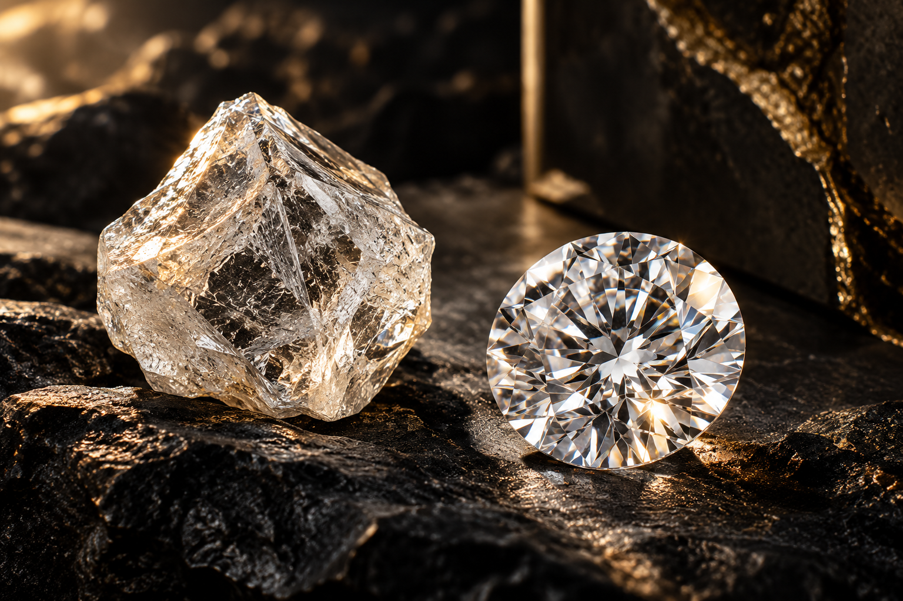
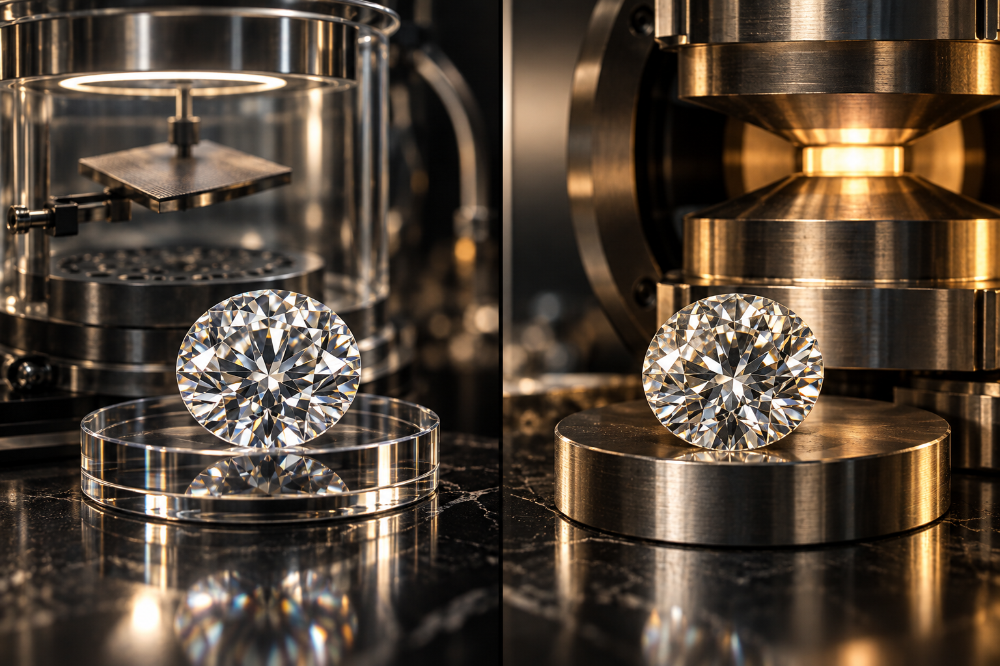

Cut
Cut describes how well a diamond’s facets interact with light. A well-cut round brilliant can return more brightness and sparkle than a poorly proportioned stone of the same carat.
FIRECUT DIAMOND KNOWLEDGE
A visual, diamond-only guide to natural and lab-grown diamonds—4Cs, proportions, shapes, fluorescence, grading reports, CVD, HPHT and the questions worth asking before you buy.

THE 4Cs
The 4Cs are a starting framework. Two diamonds with the same headline grades can still look different because proportions, light performance, fluorescence and finish matter.
Cut describes how well a diamond’s facets interact with light. A well-cut round brilliant can return more brightness and sparkle than a poorly proportioned stone of the same carat.
For colourless grading, the scale generally moves from D downward through the alphabet. Lower colour grades can show more warmth; fancy-colour diamonds are evaluated differently.
Clarity considers internal inclusions and external blemishes. The goal is not simply the highest grade—it is an appearance that works for the size, shape and budget.
Carat is weight, not a direct measurement of visual size. Face-up spread depends on shape and proportions, so compare dimensions as well as carat weight.
SEE IT IN MOTION
Two distinct motion films show the stone and the documentation conversation without adding unrelated jewellery or gemstone topics.
Natural diamonds form deep within the Earth under extreme pressure and temperature over geological timescales. Their origin is the key distinction—not a different definition of diamond.
A grading report describes the characteristics of a specific diamond. Match the report number and details to the actual stone; do not treat a generic certificate image as proof for another stone.
NATURAL DIAMONDS
A natural diamond is crystalline carbon formed by natural geological processes. Once mined, rough diamond is planned, cut, polished and graded according to its characteristics.

LAB-GROWN DIAMONDS
Lab-grown diamonds are diamonds grown in a controlled technological environment rather than formed naturally underground. They are still diamond: carbon atoms arranged in the diamond crystal structure.
Chemical Vapor Deposition grows diamond material from a carbon-containing gas in a controlled chamber. Think of it as building the crystal layer by layer.
High Pressure High Temperature uses very high pressure and temperature as the growth environment for diamond crystals.
BEYOND THE 4Cs
Compare length, width and depth—not only carat. Two stones at the same weight can have different face-up sizes.
Facet alignment and proportions influence how light moves through the stone. The same grades do not guarantee identical visual performance.
Fluorescence is a response to ultraviolet light. Consider it alongside colour, clarity, cut and the actual appearance of the stone.
If a diamond is represented as certified, ask which laboratory graded that exact stone and verify the report details against it.
Always make natural or lab-grown origin clear before comparing price or specifications.
Example: 1 carat • E • VVS1 • 3EX • fluorescence none • GIA or IGI. A clear brief makes comparison easier.
THE FIRECUT CHECKLIST